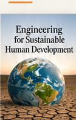
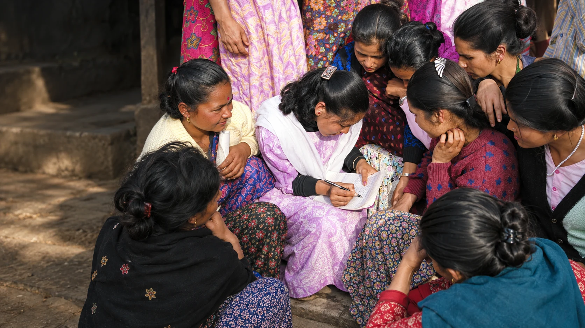
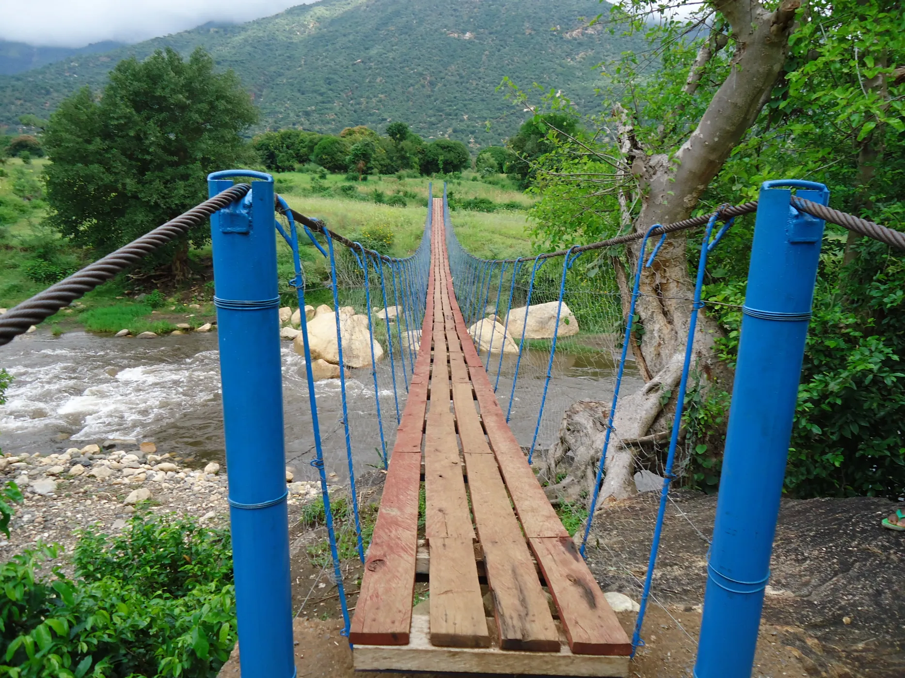
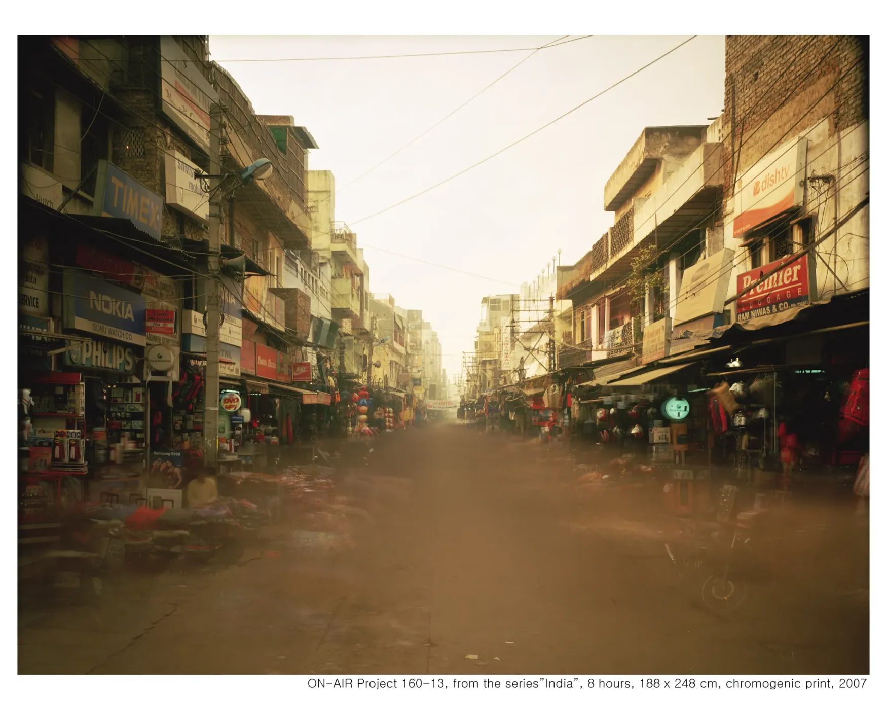
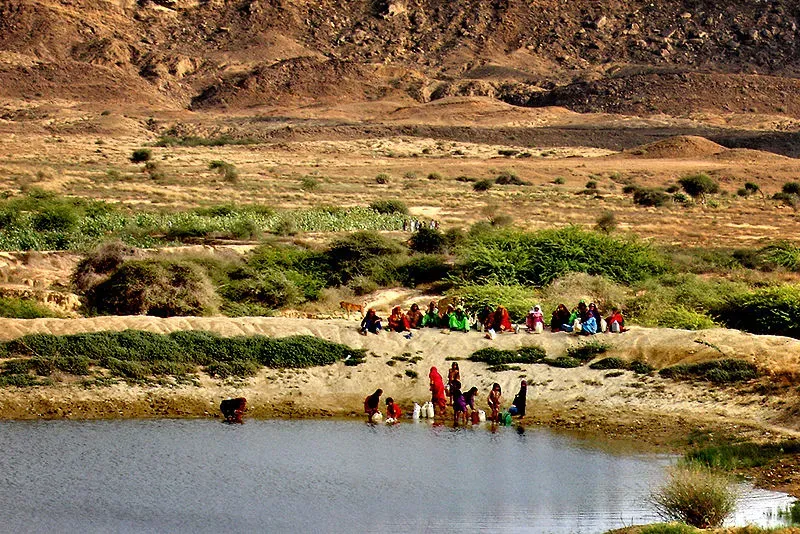
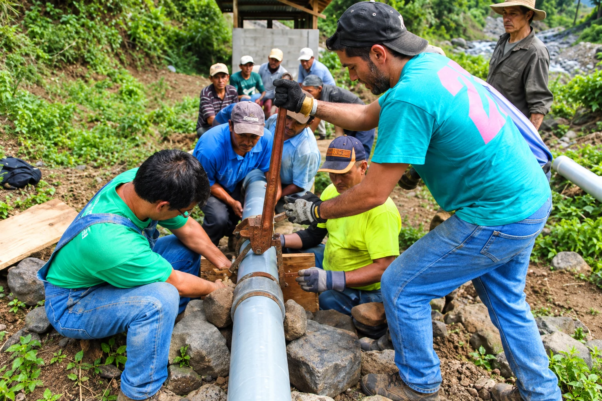
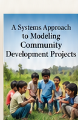
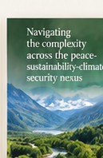
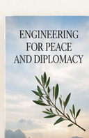

Development
Engineering
Using engineering knowledge and tools to work with people to build a more just, sustainable and peaceful world.
Explore Development EngineeringWhat is Development Engineering?
Development Engineering applies engineering knowledge and tools to work with people to create solutions for human development challenges—especially in low-resource settings.
Learn More About Development Engineering
Read the full Development Engineering overview
Dr. George Bugliarello (2008) describes engineering for development, or development engineering, as an interdisciplinary field for engineers who understand development and sustainability, bring technical knowledge to those challenges, and collaborate with other disciplines, communities and political leaders to design and implement solutions.
OpenAI (2023) considers development engineering as “a vital field that contributes to improving the well-being of communities and advancing sustainable development goals. Development engineers apply their engineering expertise to tackle complex challenges and create positive impacts on societies around the world.”
Engineering plays a crucial role in developing technology and creating solutions that lift billions of people out of poverty and alleviate their daily struggles. Addressing the needs of the 4–5 billion individuals who fight for survival each day is no longer optional for engineers—it is both a professional and personal responsibility.
Meeting twenty-first-century engineering challenges demands more than technical solutions. It requires an understanding of the dynamics of socio-technical-psychological systems in which physical structures, institutional arrangements, relational networks, and inner human processes co-evolve.
Development engineering challenges traditional engineering practices that focus on value-neutral technical solutions without considering social context. It calls for reflective and adaptive thinking, systems thinking, engagement, fieldwork, and collaboration with technical and non-technical stakeholders.
Ultimately, development engineering humanizes the profession, reinforcing that, at its core, engineering is, above all—and has always been—about people.
Why Development Engineering?
Development Engineering can make a critical contribution to global development by advancing solutions that are people-centered, environmentally sustainable and practical to implement.
Read the full Why Development Engineering section
Development engineering brings peace. Weak states with limited or no governance and rule of law, and impoverished communities in a globalized world, are more vulnerable to risks. Vulnerable communities do not have the capacity and resilience to adapt and cope with crises and adverse events and even less when facing multiple issues such as conflict, limited access to resources, and climate-related hazards.
Development engineering brings opportunity and economic prosperity. Four billion people seeking an improved quality of life represent one of the most vibrant growth markets in the world. Joint ventures between private and public sectors can unlock opportunity across health care, low-cost housing, energy and agriculture. There is a huge opportunity for doing well by doing good.
Development engineering is ‘engineering with soul.’ It is engineering with a human heart—compassionate practice that brings body, mind and spirit into the work. Not only does it create meaningful change, it brings purpose and a sense of meaning into our own lives.
Development engineering is about the 5Ps of sustainability. It is about navigating the complexity across the nexus between people, planet, prosperity, partnerships, and peace.
Books by Bernard Amadei

A Systems Approach to Modeling Community Development Projects

A Systems Approach to Modeling the Water-Energy-Land-Food Nexus

Navigating the complexity across the peace-sustainability-climate security nexus

Engineering for Peace and Diplomacy
Bernard Amadei
The Author
Dr. Amadei is a Distinguished Professor Emeritus of Civil Engineering at the University of Colorado at Boulder. He is the Founding Director of the Mortenson Center in Engineering for Developing Communities, founding president of Engineers Without Borders–USA, and co-founder of the Engineers Without Borders-International network.
Learn More About Bernard Amadei
“Engineering can and should be a force for a more just, sustainable and peaceful world.
“Real and lasting change happens when we work with people, not just for them.
“Development Engineering is about applying knowledge to serve people and the planet.
1 / 3
Contact Us
Have a question, an idea to share, or an invitation for Bernard? Send us a message and we’ll be glad to connect.